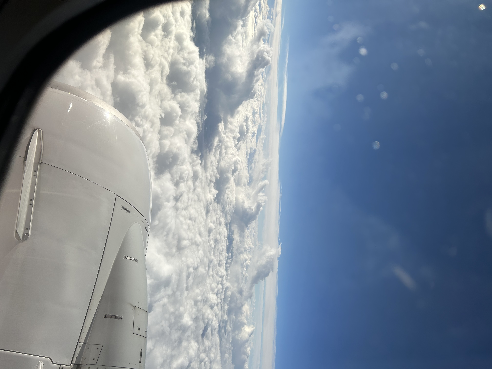
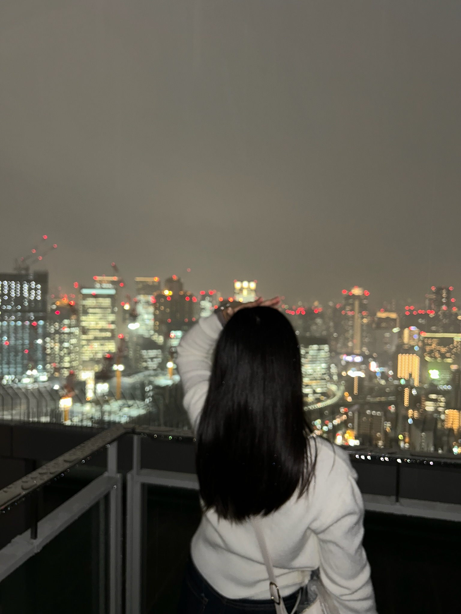
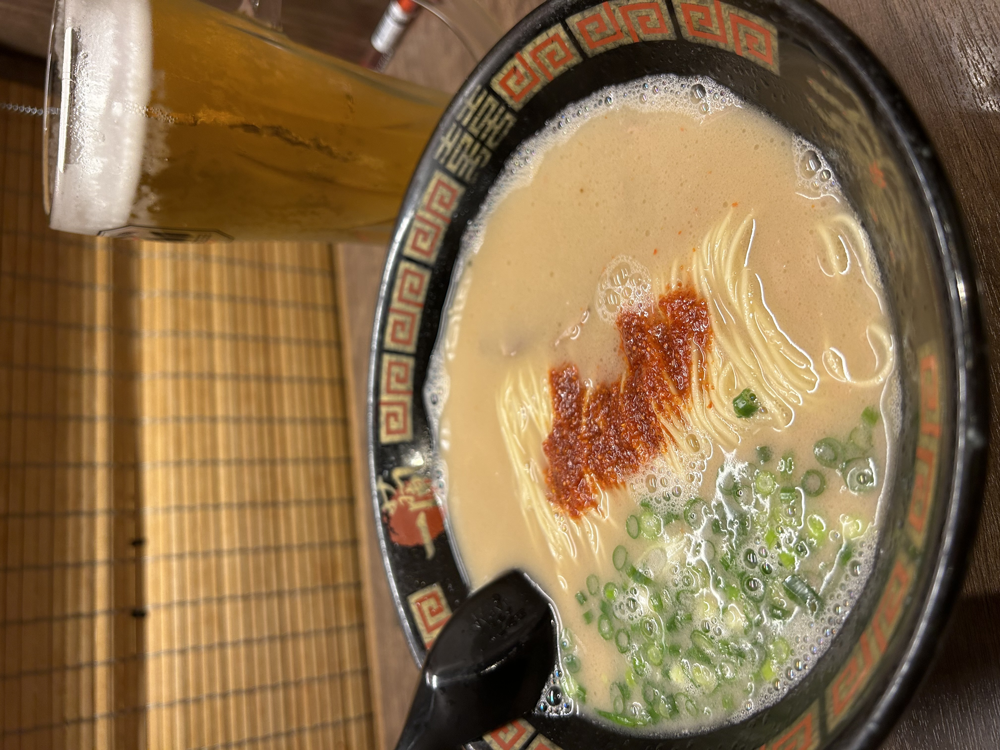
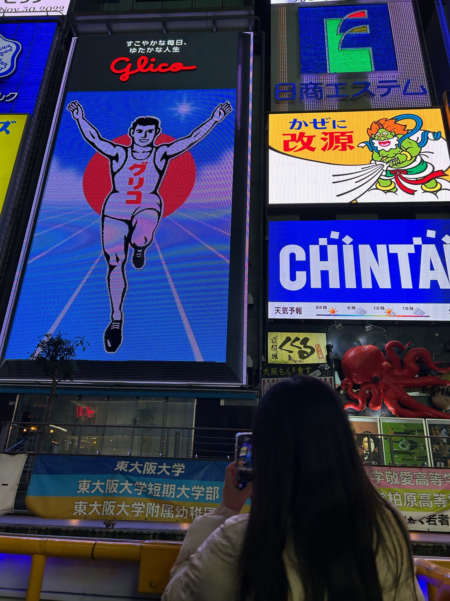
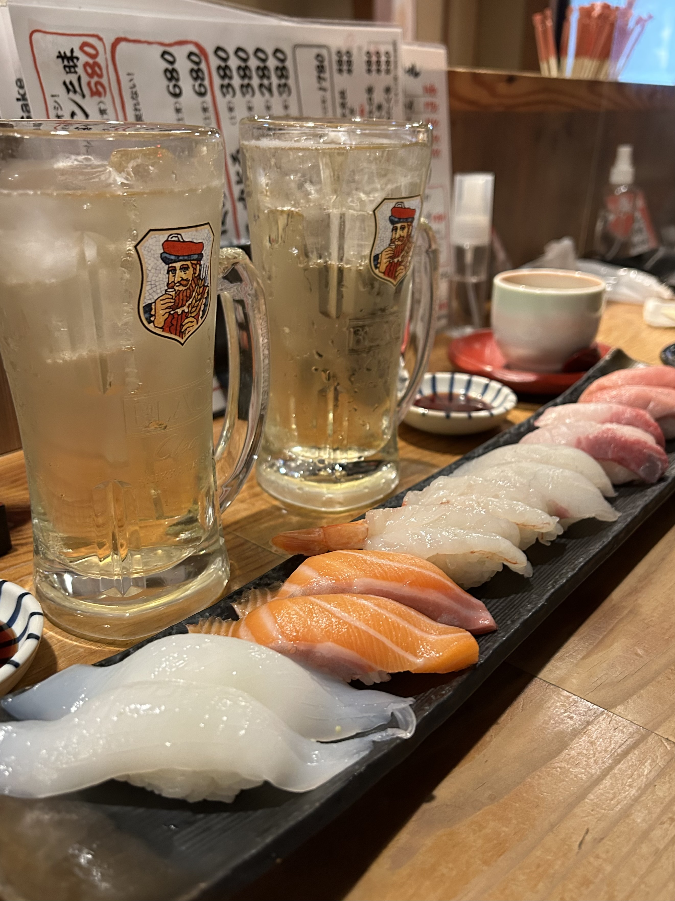
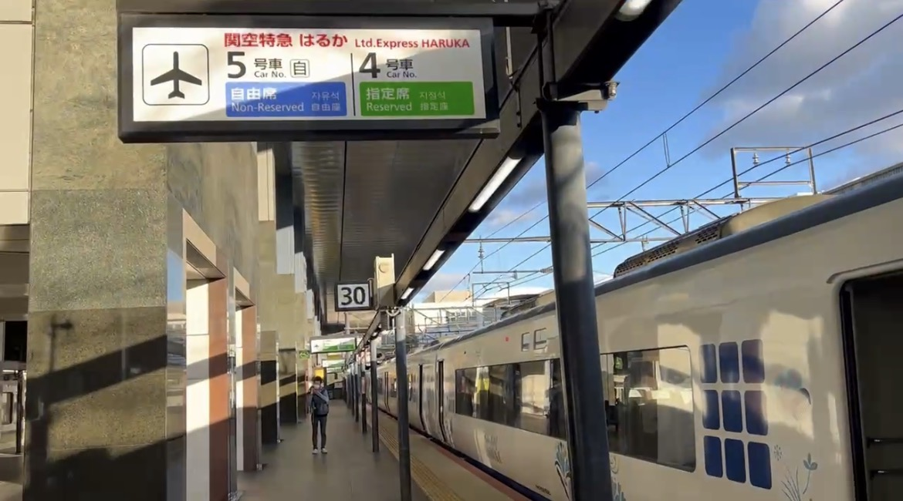
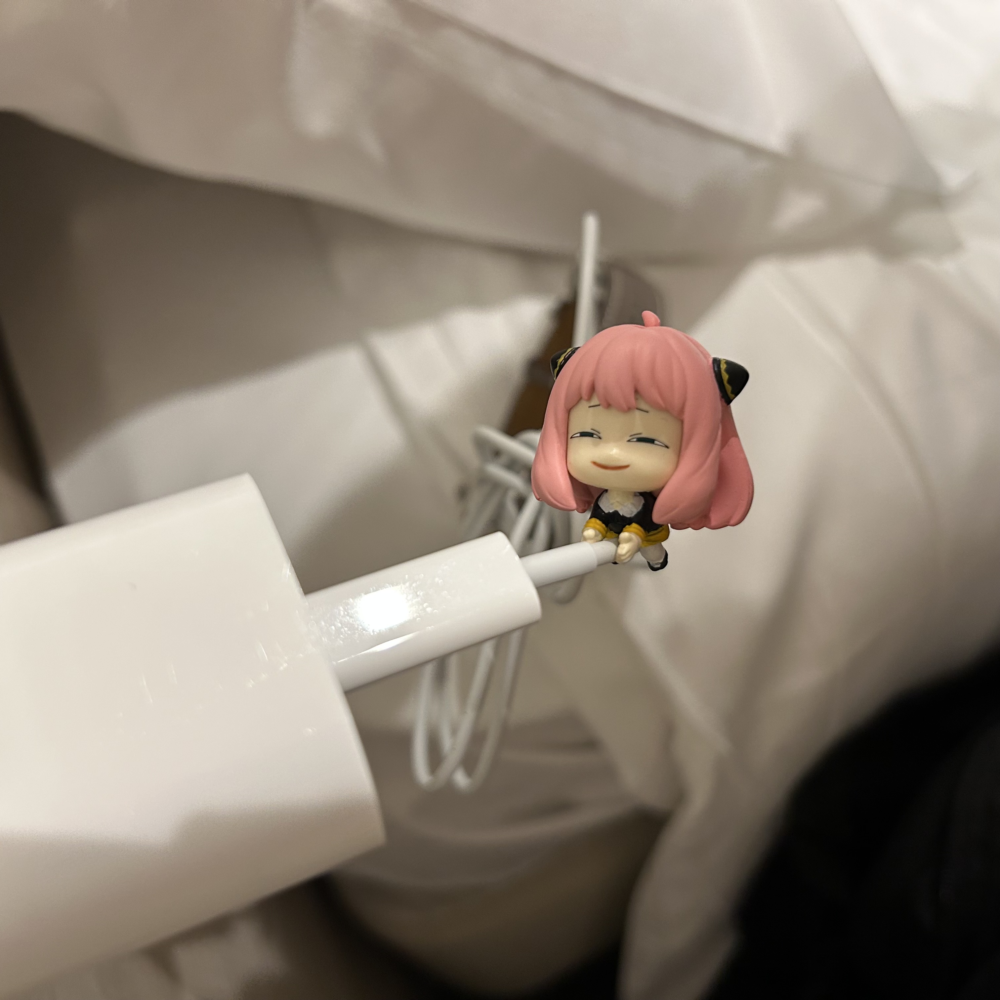
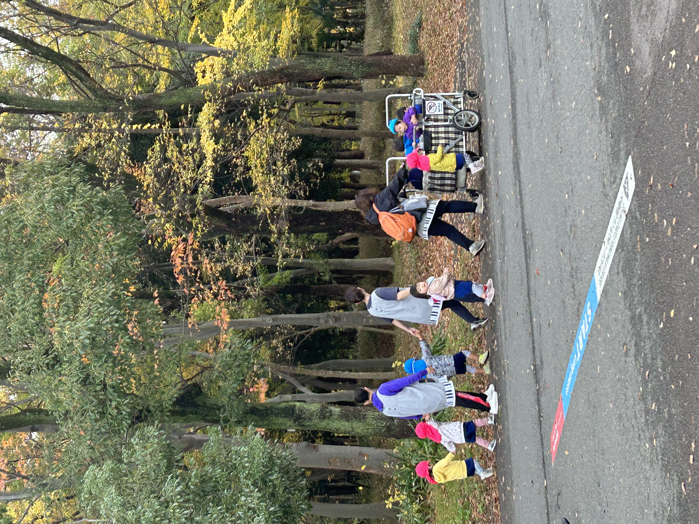
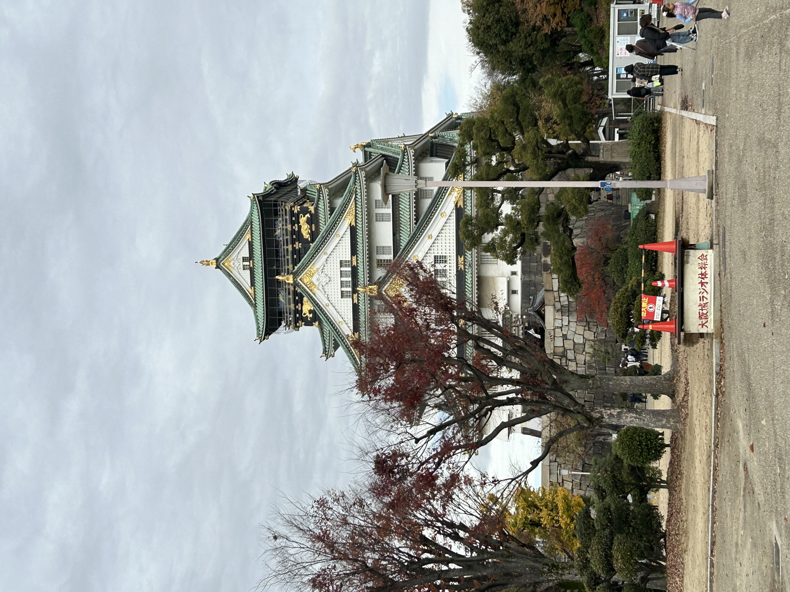
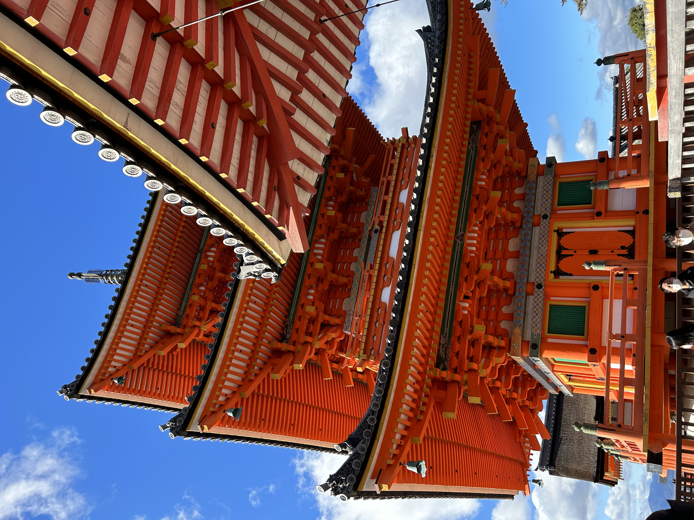

여행 중 비를 고스란히 맞거나, 길을 잃어 계획한 식당에 가지 못하거나,
물건을 잃어버렸을 때 속상해서 남은 일정을 다 망치지는 않나요?
사카 3박 4일 여행 동안 그 모든 최악(?)의 시나리오를 고스란히 겪었습니다.
하지만 기억에 가장 남는 진짜 추억들은 예상 밖의 우연들이었습니다. 생생한 고생담과 즉흥적인 모험기를 보며 대리만족과 함께 '계획'을 잠깐 내려놓아보세요!


비가 오지만 아무생각 없이 전망대로 향한 우리.
"전망대 규정상 우산을 쓸 수 없으십니다..." 라는 직원의 말.
결국 우린 온몸으로 비를 흠뻑 맞아 생쥐 꼴이 되었지만, 빗물 속에 번져나간
도시의 야경은 정말 잊지 못할 찰나의 영화 속 한 장면 같았다!
돌아오니 저녁 9시가 훌쩍 넘은 시간. 라멘집에 들어갔더니 무려 2시간 웨이팅...
밤 11시에 삼킨 뜨끈하고 기름진 돈코츠 라멘은 평생 잊지 못할거다!

도톤보리 강변을 실실 걸어가다 강 위에 다니는 배를 마주쳤다.
"어라? 저거 타볼까?" "좋아!"
매표소로 냅다 달려가 배 표를 샀다.
물 위에서 맞이한 오사카의 시원한 바람,
다리 위에서 열심히 손을 흔들어주던 사람들의 미소는 이번 여행 중에서 가장 재미있고 행복한 경험였다.
스티커 사진기를 발견해 무작정 사진부터 찍은 우리는 기계 작동법도 온통 일본어라
땀만 흘리고 있는데,
옆 부스에서 우릴 보던 일본인 친구가 다가왔다.
출력 방법을 알려주며 겨우 완성된 우스꽝스러운 외계인 얼굴 사진은 우리의 평생 이야깃거가 되었다.

계획했던 식당에 가다 길 잃은 우리는 쿨하게 포기하고 앞에 보이는 초밥집에 들어갔다.
놀랍게도 그곳 아르바이트 직원이 한국어를 무척 잘했고,
그의 추천으로 시킨 도톰한 회가 올라간 초밥과 음식들은 성공이었다.
하지만 행복은 거기까지였다...
늦은 밤 숙소에 도착해 가방을 정리하던 친구의 외마디 비명.
"여... 여권이 없어!!" 기억을 더듬어보니 디즈니랜드에 두고 온 것이었다.
수많은 상상들이 머릿속을 강타했다. 내일 귀국인데!

여권을 되찾고, 남은 소중한 2시간 동안 우리는 교토에서 미친 듯이 돌아다녔다.
2시간 뿐이였지만, 정말 알차게 관광했다!
구경을 마치고 공항 가는 특급 기차를 간신히 탔으나, 중간에 갑자기 기차가 30분 멈춰 서는 대참사 발생!
기차 속에서 비행기 놓칠 생각에 손발이 떨렸지만, 도착하자마자 질주하여 탑승해서 집으로 돌아올 수 있었다.
간단한 테스트를 통해 부적을 뽑아보세요!
당신의 영혼에 흐르는 즉흥 수치 결과
불러오는 중...
진단서 결과
길가다 그냥 들어간 식당이 인생 맛집이 되는 부적
화면을 캡처하여 스트레스 받을 때 꺼내 보세요.



